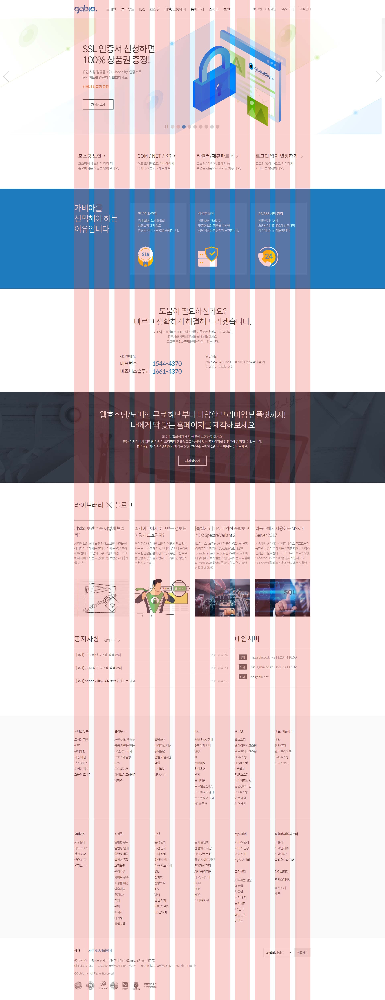

Layout
그리드 시스템
그리드 시스템은 선이나 면에 이미지와 텍스트를 맞춰 설계 하는 디자인 방법론입니다.
- 그리드는 디자인 구성요소들을 조화롭게 융합하고 질서를 부여하는 하나의 수단으로, 주어진 정보를 빠르게 쉽게 읽을 수 있도록 할뿐 아니라 본문,제목 이미지 등 정교한 시각적 체계를 가질 수 있도록 도와줍니다.
- 960 System https://960.gs
그리드 시스템 구조
- 12 column
- 16 column
960픽셀 = (60픽셀 +20픽셀) *12
컨테이너 가로 = (컬럼가로 + 커터가로 * 컬럼)
컨테이너 가로 = (컬럼가로 + 커터가로 * 컬럼)
컴펌의 폭 ={문서 전체 폭 - (커터X개수)}/ 컬럼 개수
60픽셀={960픽셀-(20픽셀*12)}/12
60픽셀={960픽셀-(20픽셀*12)}/12
그리드 시스템 용어
- Margin : 바깥쪽 여백
- Row : 행
- Column : 열
- Gutter : 열 간격
- Flowine : 기준선
- Module : 교환 가능한 구성부분
- Spatial Zone : 비어있는 공간

MediaQuery
미디어 쿼리는 화면 크기에 따른 각각의 속성 값을 지정하여, 여러가지 화면을 구성하는 기술입니다. CSS2에서는 'print','screen'에서 사용하던 것을 CSS3에서는 확대되어 스크린 폭/높이 등 여러가지 관련 정보를 이용하여 스타일 속성을 바꿀 수 있습니다.
기본 속성
참고
@media only all and (조건문) {실행문}
- @media : 미디어 쿼리가 시작됨을 표시합니다.
- only : 미디어 쿼리 구문을 해석하라는 명령어
- all : 미디어 쿼리를 해석해야 할 대상을 나타냅니다.(생략가능)
- all : 모든 미디어 유형에서 사용할 CSS를 정의합니다.
- print : 인쇄 장치에서 사용할 CSS를 정의합니다.
- screen : 컴퓨터 스크린에서 사용할 CSS를 정의합니다.
- aural : 화면을 읽어 소리로 출력해주는 장치에서 CSS를 정의합니다.
- tv : TV에서 사용할 CSS를 정의합니다.
- handheld : 손에 들고 다니는 장치를 사용할 CSS를 정의합니다.
- projection : 프로젝트를 위해 사용할 CSS를 정의합니다.
- and : 앞과 뒤의 조건을 나타냅니다.(생략가능)
- (조건문) : 해당 조건을 설정 할 수 있습니다.
- (실행문) : 조건에 따른 실행을 설정합니다.
외부 파일불러오기
<link rel="stylesheet" media="screen and (min-width:400px)" href="screen.css">
내부 설정하기
/* 화면 너비가 400px 이상이고 700px 이하이면 실행 */
@media screen and (min-width:400px) and (min-width:700px) {}
- guideguide.mehttps://guideguide.me/
가비아 그리드 시스템
